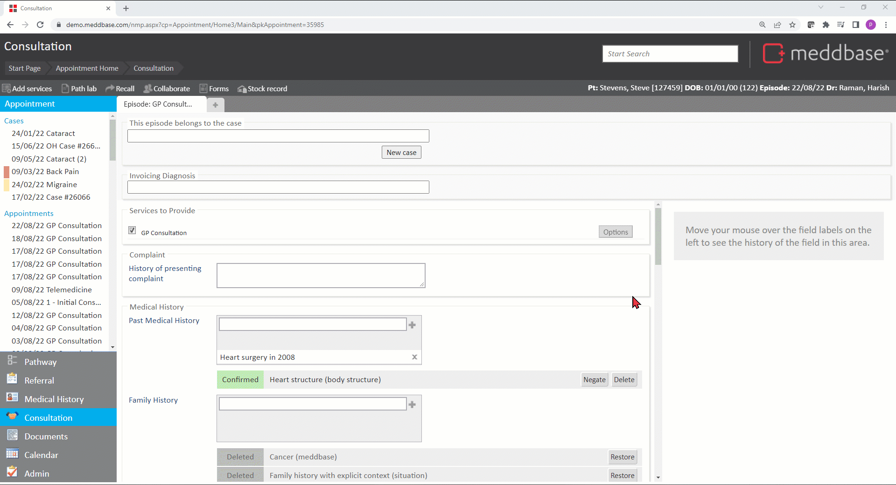
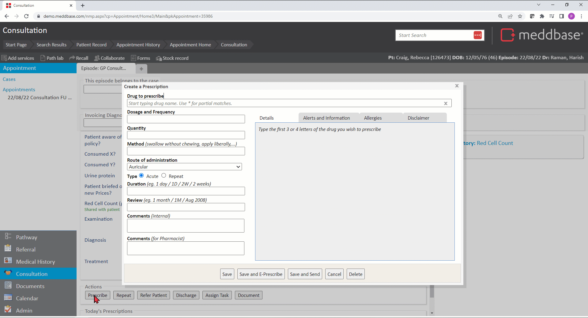
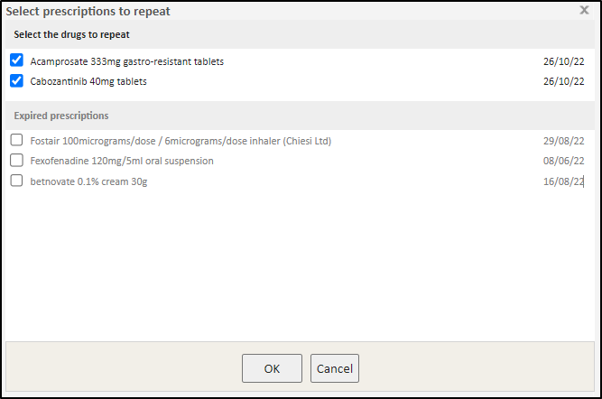
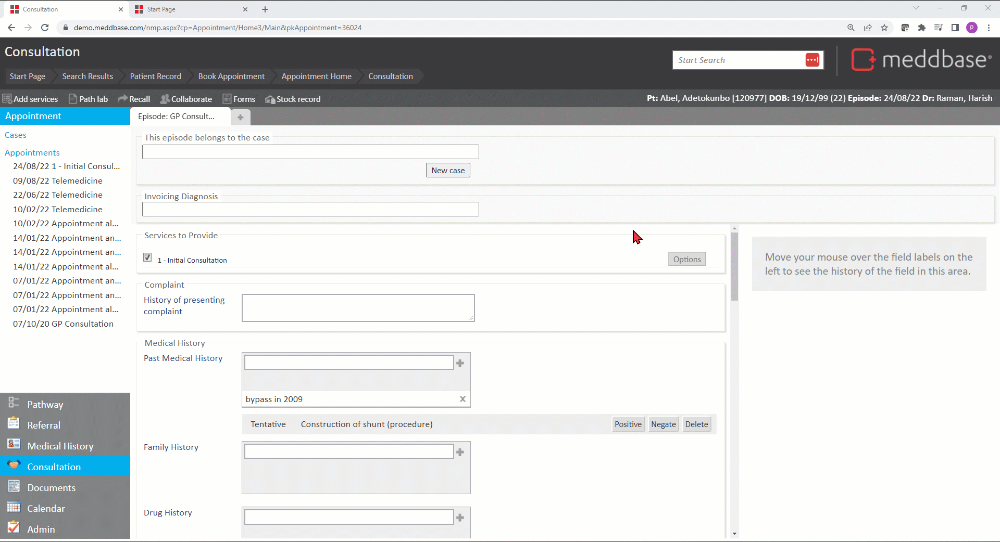
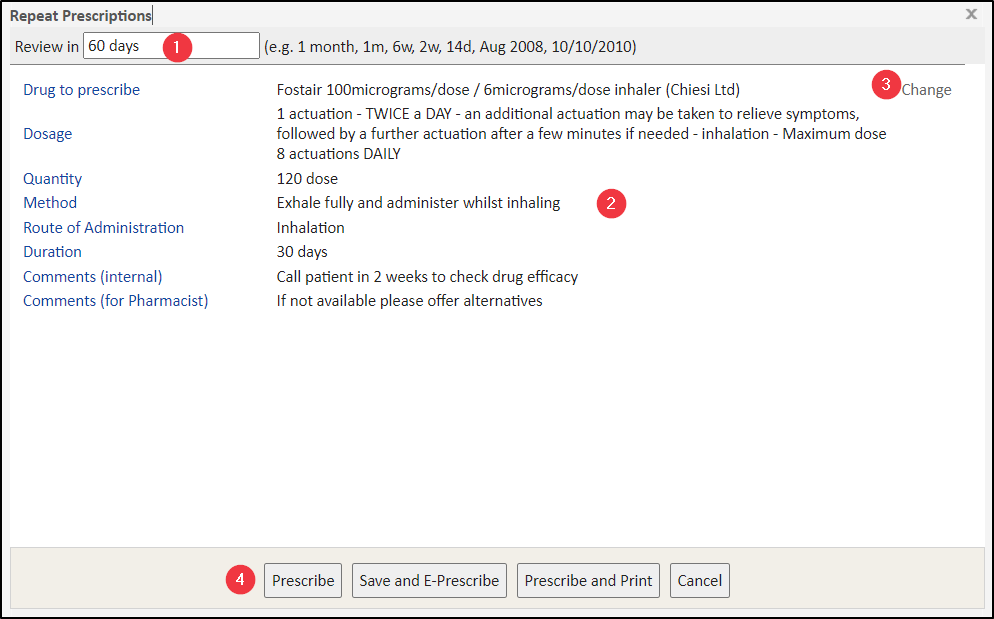
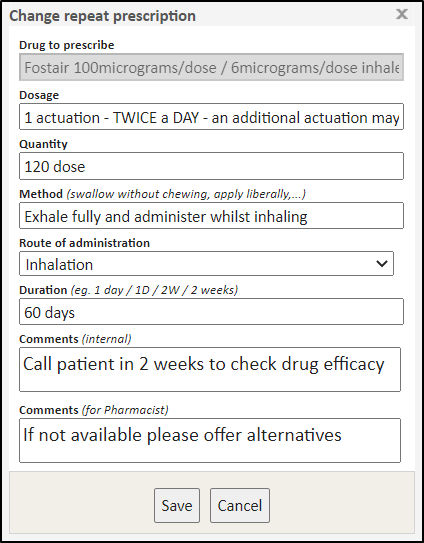

![[Full alt text]](images/Create%20a%20prescription%20dialog%20window.png)
Meddbase has a built-in integration with First Data Bank who offer a centralised drugs database of over 70,000 drug products and packs. First Data Bank central drug database is updated monthly ensuring that the information in Meddbase is completely up to date.
Acute and repeat prescriptions can be written in the system using the First Data Bank database. Clinical decision support is included with every prescription providing drug to drug interaction, contraindication and allergy warnings amongst others.
This article will walk you through prescribing Acute and Repeat prescriptions from within a Consultation.
Both Acute and Repeat Prescriptions can be prescribed from Prescription Tasks.
Click here for a detailed article on 'Working with Prescription Tasks'
Click here for a detailed article on 'Working with Repeat Prescription Tasks'
There are some pre-requisites required to enable prescribing in Consultation:
Please contact the client Account Management Team on accountmanagement@meddbase.com for more details or to request changes to your Clinical Forms
To create an Acute Prescription when in Consultation:

In the Create a prescription dialog that appears
1. Type characters for drugs to prescribe (typing in at least 3 letters triggers the drug database search and returns all matching drug derivatives)
2. Select the drug to prescribe from the menu
3. Review any Preparation Warnings that appear. These include sensitivity alerts, drug to drug interaction warnings, as well as other warnings and disclaimers.
The Medical User must click Accept Warnings in order to continue and cannot simply close this window. It is important to note that the Preparation Warnings are not a substitute for a thorough knowledge of pharmacology and the application of clinical judgement during prescribing.
The Preparation Warnings are generated by Multilex clinical decision support engine. The engine takes into account all SNOMED CT terms which have been recorded as part of patent's consultations in Meddbase. This may include findings, disorders or allergies generated by the system's Natural Language SNOMED matching algorithm, but not explicitly confirmed nor negated by a Medical Person in Meddbase, and thus not visible in the patient's Medical History. Medication could subsequently be incorrectly identified by Multilex as contraindicated. The Medical Person in Meddbase must take every care to ensure that SNOMED CT terms are appropriately confirmed/negated/deleted and patients are not inappropriately deprived of medication.

Other fields and options in this dialog window allow you to provide important details about the Prescription:
1. The Details tab shows you the recommended dosages and manufacturer’s packs and clicking any of these options automatically populates the corresponding field on the left-hand side. You can also type in your own values in these fields if needed.
2. The Method field allows you to specify how the drug should be taken.
3. The Type for the prescription can be selected as Acute (one-offs) or Repeat (multiple courses will be required).
If the Type is Repeat, the review date is mandatory
4. The Duration field allows stating the length of time this drug will be taken over
5. The Review field allows stating when this drug will be due for a review. Furthermore, providing a review date on an Acute prescription will cause this drug to appear on the list of drugs available to Repeat.
Stating a Review date will cause the drug to become available to repeat. For Repeat prescriptions, stating the Review date is mandatory. For both Acute and Repeat prescriptions, the drug will be added to the Expired prescriptions list past the review date and still be available to repeat.
Both Duration and Review should be expressed in the format of a number followed by either d, w, or m., e.g., 1d = 1 Day, 2m = 2 Months, 6w = 6 Weeks. Alternatively, you can state the exact date as DD/MM/YYY
6. The Comments (internal) field allows adding a note or comment visible on the prescription entry in the patient's medical history
7. The Comments (Pharmacist) field allows adding a note or comment visible on the prescription printout
8. A range of actions offered at the bottom of the dialog as buttons. These are explained in the table below:
| Button | Outline explanation |
| Save | Creates a prescription record for the patient. When created, the prescription is logged in the Medical History of the patient. |
| Save and E-Prescribe | By selecting this option, a Send electronic prescription dialog is presented. This enables the production of an ePrescription using the Medication Delivery feature. When created, the prescription is logged in the Medical History of the patient. |
| Save and Send | Creates a prescription record for the patient and enables a printout* of the prescription to be produced. When created, the prescription is logged in the Medical History of the patient. |
| Cancel | Closes the Create a Prescription dialog and returns to Prescription Task Dialog. |
| Delete | At this point, if the Delete button is selected an advisory message appears saying that a prescription has not been created to delete. Once a prescription is created and edited, this button enables you to mark the prescription as deleted (although it is visible in the ‘Deleted’ section of the Medical History). |
*Meddbase Users should review the printed prescription prior to printing or tasking it, to ensure that no details are lost or ambiguous in the event the document spans more than one page.
To Repeat a drug when in Consultation:
The below applies to Acute prescriptions within a stated Review date, as well as Repeat prescriptions (where stating a Review date is mandatory)

Repeating an Acute prescription creates a new prescription with the Type set to Repeat.

The Repeat Prescriptions dialog window allows providing/amending details about the prescription:
WARNING
When repeating a prescription, the duration will default to the duration set on the initial prescription.
The reviewdate set on the repeated prescription will be independent of the initial prescription, and act accordingly.
**Unless the user also decides to change the duration of the repeat prescription.
i.e the Review date set on the repeat could be sooner than the duration set for the drug, rather than previously where the review date dictated the duration of the prescription/drug.


The information entered in the quantity fields is not subject to any validation to ensure that the entered values are appropriate for the selected drug. Clinicians must therefore enter the required quantity with great care to avoid prescribing errors.